로키 - 시뮬레이션 - 협업_김루진_0303¶
Version V2.0 최종 수정 일 2025.03.03 작성자 김 루 진 강사 협동 로봇 프로젝트 수행
Rokey 로봇 패키지 참고 차동 이동 로봇URDF - 1
Rokey 로봇 패키지 학습 목표 URDF (Unified Robot Description Format) 학습 목표 -URDF의 기본 구조와 문법 이해 -링크(link)와 조인트(joint) 정의 방법 습득 -시각적 요소(visual)와 충돌(collision) 속성 설정 -관성(inertial) 속성 정의 방법 -URDF 파일 검증 및 디버깅 방법
Rokey 로봇 패키지 로봇 모델링 , URDF 실습
- URDF Package 생성하기
- 연관 폴더 만들기
- src/urdf_tutorial 폴더 아래 다음 두 폴더를 추가
- urdf: URDF 파일을 저장할 폴더
- launch: ROS2 실행launch 스크립트를 저장할 폴더 $ mkdir -p ~/urdf_ws/src $ cd ~/urdf_ws/src $ ros2 pkg create --build-type ament_python urdf_tutorial $ cd urdf_tutorial $ mkdir urdf $ mkdir launch 차 동 구동 로봇(Differential Drive Robot) -XML 형식의 로봇 모델 정의 -Xacro 매크로를 사용하여 파라미터화 및 코드 재사용성 향상
Rokey 로봇 패키지
- setup.py 두 폴더가 컴파일에 포함될 수 있도록'src/urdf_tutorial/setup.py'를 아래와 같이 편집 import os from glob import glob from setuptools import setup package_name = 'urdf_tutorial' setup( name=package_name, version='0.0.0', packages=[package_name], data_files=[ ('share/ament_index/resource_index/packages', ['resource/' + package_name]), ('share/' + package_name, ['package.xml']), (os.path.join('share', package_name, 'launch'), glob('launch/.launch.py')), (os.path.join('share', package_name, 'urdf'), glob('urdf/.xacro’)), (os.path.join('share', package_name, 'urdf'), glob('urdf/.urdf’)), ], install_requires=['setuptools'], zip_safe=True, maintainer='daeho', maintainer_email='daeho@todo.todo', description='TODO: Package description', license='TODO: License declaration', tests_require=['pytest'], entry_points={ 'console_scripts': [ ], }, ) 로봇 패키지 만들기 실습 .urdf 도 추가하세요.
Rokey 로봇 패키지 ‘src/urdf_tutorial/urdf/robot_1.xacro’ 파일을 만들고 아래와 같이 편집
- base_link: 자동차 중심 링크
- body: 가로, 세로, 높이 각각1m인상자
-
body_joint: base_link와body를 연결하는joint
-
로봇 모델 만들기
- Base Link: 로봇의 메인 본체 (직육면체)
- Wheels: 왼쪽과 오른쪽 바퀴 (원통형)
- Joints: 바퀴와 베이스를 연결하는 조인트 -차 동 구동 메커니즘: 두 바퀴가 독립적으로 제어 가능 -Gazebo 호환 플러그인 내장 -물리적 특성(질량, 관성) 정의 -ROS 호환 설계
Rokey 로봇 패키지 ‘src/urdf_tutorial/launch/robot_1.launch.py’ 파일을 만들고 아래와 같이 편집, 2가지 방법
- 런치 파일 만들기 import os from ament_index_python.packages import get_package_share_directory from launch import LaunchDescription from launch.substitutions import LaunchConfiguration from launch.actions import DeclareLaunchArgument from launch_ros.actions import Node import xacro def generate_launch_description(): use_sim_time = LaunchConfiguration('use_sim_time') pkg_path = os.path.join(get_package_share_directory('urdf_tutorial')) xacro_file = os.path.join(pkg_path,'urdf','robot_1.xacro') robot_description = xacro.process_file(xacro_file) params = {'robot_description': robot_description.toxml(), 'use_sim_time': use_sim_time} return LaunchDescription([ DeclareLaunchArgument( 'use_sim_time', default_value='false', description='Use sim time'), Node( package='robot_state_publisher', executable='robot_state_publisher', output='screen', parameters=[params]) ]) 로봇 패키지 만들기 실습 로봇 시스템의 노드, 파라미터, 액션 등을 설정하는 데 사용
Rokey 로봇 패키지
-
빌드 및 소싱 첫 번째 터미널에서 아래 명령을 실행해서 컴파일 및‘robot_1.launch.py’ 파일을 실행
-
두 번째 터미널에서 아래 명령을 실행해서Rviz를실행 $ cd ~/urdf_ws $ colcon build --symlink-install $ source install/setup.bash $ ros2 launch urdf_tutorial robot_1.launch.py $ cd ~/urdf_ws $ source install/setup.bash $ rviz2 로봇 패키지 만들기 실습 Rokey 로봇 패키지
-
rviz2 설정 Display > Global Option > ‘Fixed Frame’을‘base_link’로변경 왼쪽 하단의‘Add’ > ‘TF’ > ‘Ok’ 로봇 패키지 만들기 실습
Rokey 로봇 패키지
- TF 보기 TF의 하위 항목 중‘Show Names’를선택 중앙에‘base_link’와‘body’가 겹쳐진 상태로 보이는 것 확인 왼쪽 하단의‘Add’ > ‘RobotModel’ > ‘Ok’ 로봇 패키지 만들기 실습
Rokey 로봇 패키지
- 로봇 모델 보기 RobotModel의 하위 항목 중‘Description Topic’을‘/robot_description’으로 변경 'File' 메뉴에서'Save Config As'를선택 로봇 패키지 만들기 실습
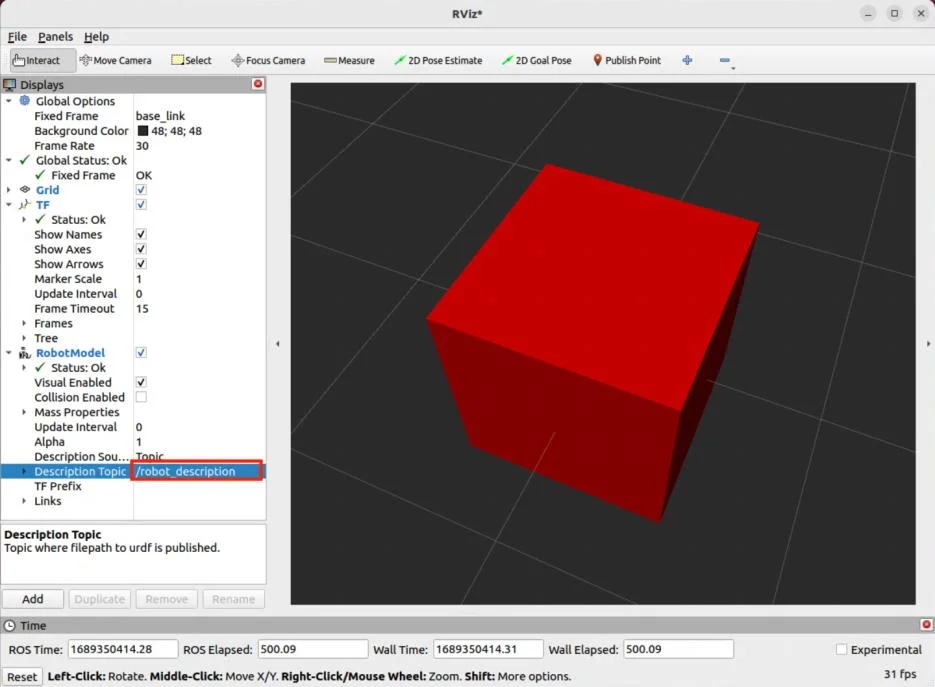
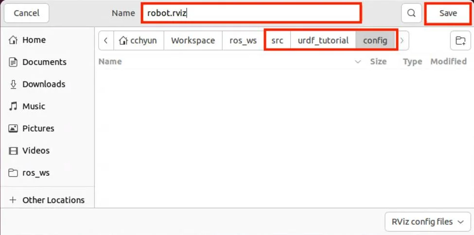
Rokey 로봇 패키지
-
노드 및 토픽 확인 세 번째 터미널에서 아래 명령을 실행해서rqt_graph를실행
-
/robot_state_publisher: ‘robot.launch.py’를 이용해서 실행한Node
-
/transform_listner_Impl: rviz2에서 실행한Node
-
‘/robot_state_publisher’ Node는 ‘/transform_listner_Impl’ Node에게 ‘/tf’, ‘/tf_static’ 두개의topic을전달 $ rqt_graph 로봇 패키지 만들기 실습
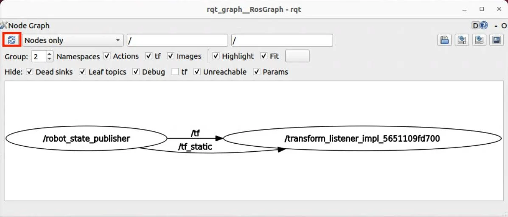
Rokey 로봇 패키지
-
정육면체의 색 변경 ‘src/urdf_tutorial/urdf/robot_1.xacro’ 파일을 아래와 같이 수정
-
material white: 위쪽에 흰색을 표현하는white material을 선언 색상은rgba 모두1로지정: (색상의 범위: 0 ~ 1 )
-
body link material: body link에 위에서 지정한white material을 지정 변경된 값을 반영하기 위해 첫 번째 터미널에서 ‘CTRL+C’ 키를 입력해서ROS2를 종료한 후 명령을 수행
Rokey 로봇 패키지 참고
- 바디를 원통형(cylinder)로 변경 ‘src/urdf_tutorial/urdf/robot_1.xacro’ 파일을 아래와 같이 수정 로봇 패키지 만들기 실습 geometry 태그는 로봇의 각 링크(link)의 모양과 충돌 모델을 정의 Box (상자) Sphere (구체) Cylinder (원기둥) Mesh (메쉬) 왜 완전한 원 이 아닐까?
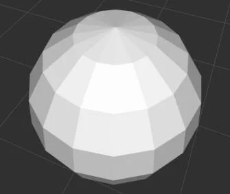
Rokey 로봇 패키지 참고
-
시각적 표현과 충돌 모델의 분리 로봇 패키지 만들기 실습 URDF에서 visual 태그와 collision 태그 안에 별도로 geometry를 정의 예를 들어, 시각적으로는 메쉬를 사용하지만, 충돌 모델은 간단한 Box로 정의 가능. STL 파일 준비:
-
mesh를 사용할 때는 .stl 또는 .dae 파일이 필요
- Blender, SolidWorks, FreeCAD 등에서 3D 모델을 생성.
Rokey 로봇 패키지 참고 TF2(Transfor Framework)2
Rokey 로봇 패키지 참고 TF2가 필요한 이유 1.로봇 시스템의 좌표계 관리 -로봇은 여러 센서(라이다, 카메라, IMU 등)와 부품(바퀴, 관절 등)이 있으며, 각각은 서로 다른 위치에 장착 -각 부품과 센서의 위치 관계를 수학적으로 표현하고 관리 -TF2는 이러한 좌표계 변환을 자동으로 처리해 주는 프레임워크 2.시간 동기화 -센서 데이터는 각각 다른 시간에 수집됩니다 -TF2는 시간에 따른 좌표계 변환을 자동으로 보 간 처리 https://with-rl.tistory.com/entry/ROS2-Transformation-System-TF2 Rokey 로봇 패키지 참고 SLAM에서 TF2의 필요성 1.센서 데이터 통합 -SLAM은 여러 센서의 데이터를 통합하여 지도를 생성하고 로봇의 위치를 추정. -서로 다른 센서의 데이터를 하나의 좌표계로 변환해야 정확한 매핑이 가능. 2.로봇의 이동 추적 -base_link(로봇 중심)와 odom(주행 기준) 간의 변환 -map과 odom 사이의 변환 -이러한 변환들은 SLAM의 핵심 요소입니다 3.센서 캘리브 레이 션 -라이다나 카메라의 실제 장착 위치를 정확히 반영해야합니다 -TF2를 통해 센서의 위치 관계를 정의하고 관리할 수 있습니다 - SLAM을 구현하는데 TF2는 필수적 - 정확한 좌표계 변환 없이는 센서 데이터를 올바르게 통합할 수 없고, 결과적으로 정확한 지도 생성과 위치 추정이 불가능
Rokey 로봇 패키지 참고 TF2, Map과 Odom 변환 "로봇이 생각하는 자신의 위치"와 "로봇의 실제 위치" 사이의 차이를 계산하고 보정하는 과정 1.각 프레임의 의미 -map 프레임:
절대적인 세계 좌표계¶
로봇이 작동하는 전체 환경의 기준점¶
시간이 지나도 변하지 않는 고정된 좌표계¶
-odom 프레임
로봇이 처음 시작한 위치를 기준으로 하는 좌표계¶
주로 휠 엔코더나 IMU 등의 센서로부터 계산¶
시간이 지날수록 오차가 누적되는 특징¶
2.변환이 필요한 이유 -로봇이 출발점에서 1m 전진했다고 가정해 보겠습니다 -odom 프레임에서는 정확히 1m 이동했다고 측정 -하지만 실제 map 프레임에서는 바닥이 미끄러워서 0.9m만 이동 시 => 이러한 차이를 보정하기 위해 map과 odom 사이의 변환이 필요 3.SLAM에서의 역할 -SLAM은 지속적으로 map과 odom 사이의 변환을 계산 -이를 통해 오도메트리의 누적 오차를 보정 -결과적으로 로봇의 실제 위치(map 프레임)를 정확하게 추정
Rokey 로봇 패키지 참고 차동 이동 로봇URDF - 2
Rokey 로봇 패키지 참고 로봇 패키지 만들기 실습
- ROS 로봇 좌표계 위치에 대한 표현은 x, y, z 3개의 좌표로 표현 a) base_link 프레임 -로봇의 기준 좌표계 -로봇의 중심점을 원점으로 설정 -모든 로봇 부품의 상대적 위치 정의 b) odom 프레임 -전역 고정 좌표계 -로봇의 초기 위치를 원점으로 설정 -누적 이동 거리 추적 c) map 프레임 -환경의 전체 지도 좌표계 -SLAM에서 중요한 좌표계 -절대 좌표 제공
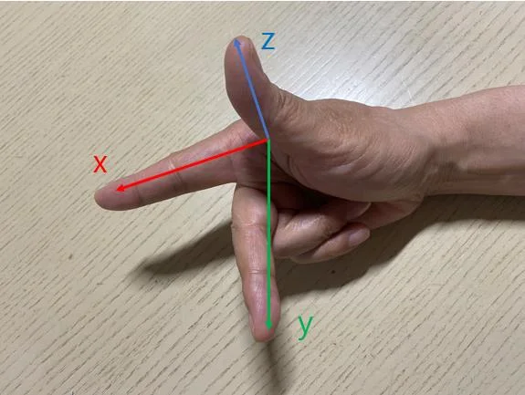
Rokey 로봇 패키지 참고 로봇 패키지 만들기 실습
- src/urdf_tutorial/urdf/robot_2.xacro
Rokey 로봇 패키지 참고 로봇 패키지 만들기 실습
-
src/urdf_tutorial/launch/robot_2.launch.py $ cd ~/urdf_ws $ colcon build --symlink-install $ source install/setup.bash $ ros2 launch urdf_tutorial robot_2.launch.py Rokey 로봇 패키지 참고 로봇 패키지 만들기 실습
-
Rviz 메뉴에서 'File' >> 'Open Config' 선택 후 이전 과정에서 저장한 config 파일
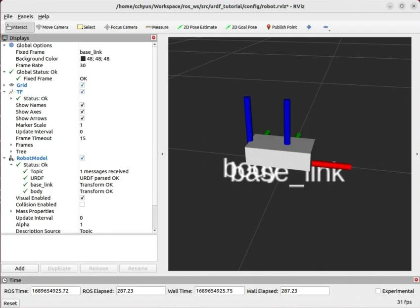
Rokey 로봇 패키지 참고 로봇 패키지 만들기 실습
- Wheel 추가
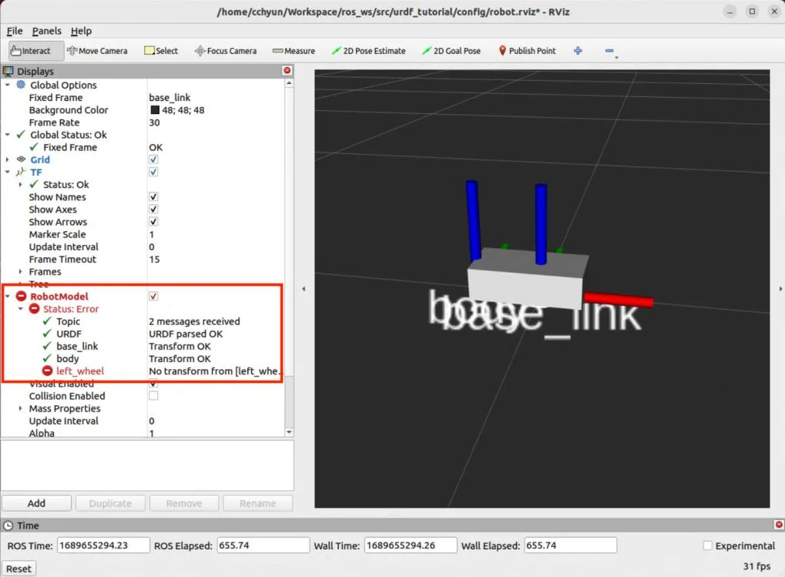
Rokey 로봇 패키지 참고 로봇 패키지 만들기 실습
-
URDF에서
은 로봇의 링크 간 연결 방식 1.continuous (연속) -무제한 회전 가능 -각도 제한 없음 -주로 바퀴나 회전 관절에 사용 2.revolute (회전) -고정된 각도 범위 내에서 회전 -최소/최대 각도 제한 있음 -로봇 관절, 팔 관절 등에 사용 3.prismatic (병진) -직선 방향으로만 움직임 -슬라이딩 관절 -리니어 액추에이터, 그리퍼, 피스톤 등 4.fixed (고정) -링크 간 움직임 없음 -강체로 연결 -구조적 연결, 센서 장착 등 Rokey 로봇 패키지 참고 로봇 패키지 만들기 실습 -
joint_state_publisher_gui rqt_graph ‘joint_state_publisher_gui’에서 ‘left_wheel_joint’ 값을 변경 left_wheel이 회전하는 것 확인
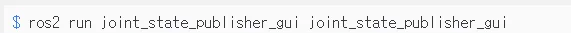
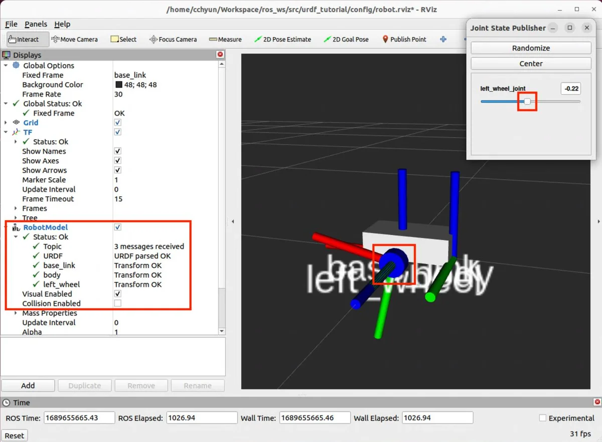
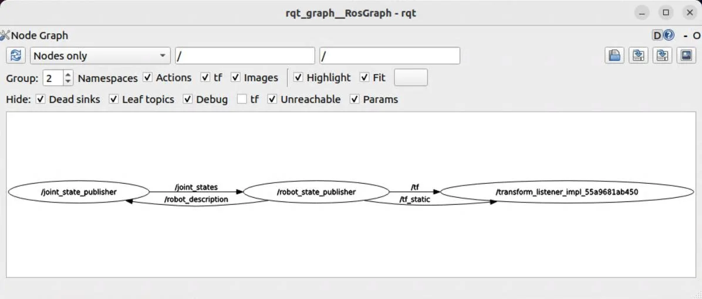
Rokey 로봇 패키지 참고 로봇 패키지 만들기 실습
-
right_wheel_joint base_link에 'continuous' 형식 부착
-
Caster Wheel 추가하기
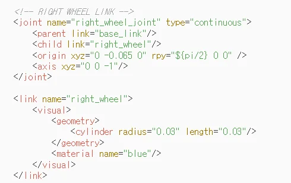
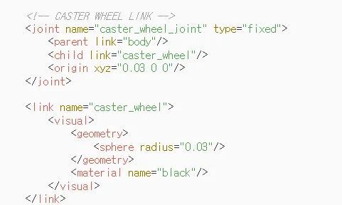
Rokey 로봇 패키지 참고 로봇 패키지 만들기 실습
- Collision 추가
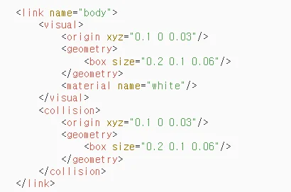
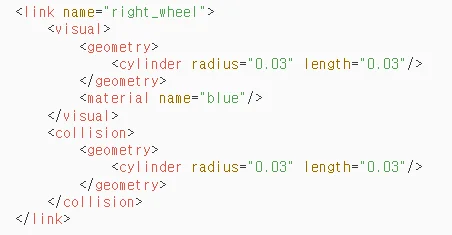
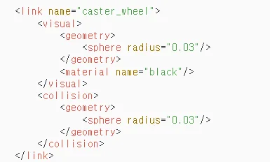
Rokey 로봇 패키지 참고 로봇 패키지 만들기 실습
- 관성 모 멘트 추가 -로봇의 링크(link)의 질량 분포와 관성 정보 -관성 모 멘트의 계산 식은https://en.wikipedia.org/wiki/List_of_moments_of_inertia에서 확인 -회전 운동에 대한 저항을 나타냅니다 -물체가 얼마나 회전하기 어려운지를 결정합니다 -로봇 제어 시 동적 특성에 큰 영향을 미칩니다
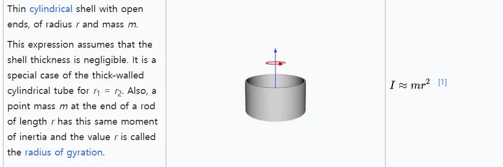
Rokey 차 동 구동 로봇 패키지 참고 차 동 구동 로봇 센서들
Rokey 차 동 구동 로봇 패키지 참고 패키지 생성 및 실행
-
워크 스페이스 및 패키지 생성 $ mkdir –p ~/car_ws/src $ cd ~/car_ws/src/ $ ros2 pkg create --build-type ament_python car_tutorial $ cd ~/car_ws/src/car_tutorial $ mkdir urdf launch config photo $ pip install numpy $ pip install opencv-python $ sudo apt install ros-humble-tf-transformations
-
필요 라이브러리, 패키지 설치
Rokey 차 동 구동 로봇 패키지 참고 적당한 크기의(400 x 300) 이미지를 " src/car_tutorial/photo/photo.png"에저장
-
이미지 저장 패키지 생성 및 실행 $ wget -O photo/photo.png [이미지url] tf publisher 로봇을 만들었다면 로봇이 가만히 있을 리는 당연히 없다. 이러한 robot의 위치를 변화시켜 주려면, robot의 base가 되는 link와 map의 transform을 publish해주는 node를 작성하면 된다. Rokey 차 동 구동 로봇 패키지 참고
-
driver 노드 작성 src/car_tutorial/car_tutorial/driver.py 패키지 생성 및 실행 import cv2 import rclpy from rclpy.node import Node from rclpy.executors import MultiThreadedExecutor from cv_bridge import CvBridge from geometry_msgs.msg import Twist from sensor_msgs.msg import JointState from sensor_msgs.msg import Image class Driver(Node): def init(self): super().init("drive")
# Parameters self.wheel_separation = 0.1 self.wheel_diameter = 0.03 self.timer_frequently = 0.1 # init variable self.joint_states = JointState() self.joint_states.header.frame_id = "joint_states" self.joint_states.name = ["left_wheel_joint", "right_wheel_joint"] self.joint_states.position = [0.0, 0.0] self.linear = 0.0 self.angular = 0.0 self.wheel_speed = [0.0, 0.0] self.wheel_rotate = [0.0, 0.0] self.msg = Twist() self.raw_vel = Twist() self.bridge = CvBridge() self.image = cv2.imread("src/car_tutorial/photo/photo.png", cv2.IMREAD_COLOR) self.img_msg = self.bridge.cv2_to_imgmsg(self.image, encoding="bgr8") # subscriber self.sub_cmd_vel = self.create_subscription(Twist, "cmd_vel", self.cmd_vel_callback, 10) # publisher self.pub_vel_raw = self.create_publisher(Twist, "raw_vel", 10) self.pub_joint_states = self.create_publisher(JointState, "joint_states", 10) self.pub_img = self.create_publisher(Image, "image",5) # timer self.timer_1 = self.create_timer(self.timer_frequently, self.publish_jointstate) self.timer_2 = self.create_timer(self.timer_frequently, self.publish_raw_vel) self.timer_3 = self.create_timer(5.0, self.publish_image)def cmd_vel_callback(self, msg): self.get_logger().info(f"recv cmd_vel message {msg}") self.msg = msg self.linear = msg.linear.x self.angular = msg.angular.z
def publish_raw_vel(self): self.raw_vel= self.msg self.pub_vel_raw.publish(self.raw_vel)
def publish_jointstate(self): # wheel speed self.wheel_speed[0] = self.linear - self.angular * self.wheel_separation / 2.0 self.wheel_speed[1] = self.linear + self.angular * self.wheel_separation / 2.0
# wheel rotate speed self.wheel_rotate[0] = self.wheel_speed[0] / (self.wheel_diameter / 2.0) self.wheel_rotate[1] = self.wheel_speed[1] / (self.wheel_diameter / 2.0) self.joint_states.header.stamp = self.get_clock().now().to_msg() self.joint_states.position[0] += self.wheel_rotate[0] *self.timer_frequently self.joint_states.position[1] += self.wheel_rotate[1] *self.timer_frequently
Rokey 차 동 구동 로봇 패키지 참고 패키지 생성 및 실행
publish¶
self.pub_joint_states.publish(self.joint_states)
def publish_image(self):
try:
self.pub_img.publish(self.img_msg)
except:
return
def main(args=None): rclpy.init(args=args) driver = Driver() executor = MultiThreadedExecutor() rclpy.spin(driver, executor=executor) driver.destroy_node() rclpy.shutdown()
if name == "main": main()
Rokey 차 동 구동 로봇 패키지 참고
- xacro 작성 src/car_tutorial/urdf/car.xacro 패키지 생성 및 실행
Rokey
차 동 구동 로봇 패키지
참고
패키지 생성 및 실행
Rokey
차 동 구동 로봇 패키지
패키지 생성 및 실행
Rokey 차 동 구동 로봇 패키지 참고
- launch 작성 src/car_tutorial/launch/car_tutorial.launch.py import os from ament_index_python.packages import get_package_share_directory from launch import LaunchDescription from launch_ros.actions import Node import xacro def generate_launch_description(): package_name = "car_tutorial"
robot_state_publisher¶
pkg_path = os.path.join(get_package_share_directory(package_name)) xacro_file = os.path.join(pkg_path, "urdf", "car.xacro") robot_description = xacro.process_file(xacro_file) params = {"robot_description": robot_description.toxml(), "use_sim_time": False} rsp = Node( package="robot_state_publisher", executable="robot_state_publisher", output="screen", parameters=[params], )
rviz2¶
rviz = Node( package="rviz2", executable="rviz2", name="rviz2", output="screen", arguments=["-d", "src/car_tutorial/config/car.rviz"], ) driver = Node( package="car_tutorial", executable="driver", output="screen", ) return LaunchDescription( [ rsp, rviz, driver, ])
모델정의파일지정¶
노드정의¶
노드실행¶
패키지 생성 및 실행
Rokey 차 동 구동 로봇 패키지 참고 런치 파일– 추가 기능 파라미터 설정 조건부 실행 from launch.actions import DeclareLaunchArgument from launch.substitutions import LaunchConfiguration DeclareLaunchArgument('use_sim_time', default_value='false'), Node(
...¶
parameters=[{'use_sim_time': LaunchConfiguration('use_sim_time')}] ) from launch.conditions import IfCondition Node(
...¶
condition=IfCondition(LaunchConfiguration('condition_var')) ) 다른launch 파일 포함 기타: 이벤트 헨들러, 그룹화 from launch.actions import IncludeLaunchDescription from launch.launch_description_sources import PythonLaunchDescriptionSource IncludeLaunchDescription( PythonLaunchDescriptionSource(['/path/to/other/launch/file.launch.py']) )
Rokey 차 동 구동 로봇 패키지 참고
-
setup.py 작성 src/car_tutorial/setup.py import os from glob import glob from setuptools import find_packages, setup package_name = "car_tutorial" setup( name=package_name, version="0.0.0", packages=find_packages(exclude=["test"]), data_files=[ ("share/ament_index/resource_index/packages", ["resource/" + package_name]), ("share/" + package_name, ["package.xml"]), (os.path.join("share", package_name, "launch"), glob("launch/.launch.py")), (os.path.join("share", package_name, "config"), glob("config/")), (os.path.join("share", package_name, "urdf"), glob("urdf/.xacro")), (os.path.join("share", package_name, "photo"), glob("photo/.png")) ], install_requires=["setuptools"], zip_safe=True, maintainer="daeho", maintainer_email="daeho@todo.todo", description="TODO: Package description", license="TODO: License declaration", tests_require=["pytest"], entry_points={ "console_scripts": [ "driver = car_tutorial.driver:main", ], }, )
-
패키지 정보 정의 이름, 버전, 설명 등의 메타 데이터를 지정
-
종속성 선언 패키지가 필요로 하는 다른ROS 2 패키지나 Python 라이브러리를 명시
-
설치 대상 지정 실행 파일, Python 모듈, 데이터 파일 등 패키지에 포함될 항목들을 정의
-
빌드 설정 컴파일이 필요한 경우 빌드 프로세스를 구성
-
colcon 빌드 시스템에 의해 사용되어 패키지 빌드 및 설치
- package.xml과 함께 패키지 구성의 핵심 요소 패키지 생성 및 실행
Rokey 차 동 구동 로봇 패키지 참고 $ cd ~/car_ws $ colcon build –symlink-install $ source install/setup.bash $ ros2 launch car_tutorial car_tutorial.launch
- 빌드 및 실행
- rviz 설정 Add -> TF Add -> RobotModel Add -> Image Global Options > Fixed Frame : base_link RobotModel > Description Topic : /robot_description Image > Topic : /image File -> Save Config 패키지 생성 및 실행
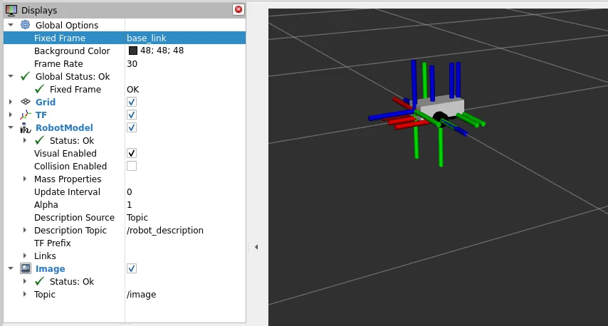
Rokey 차 동 구동 로봇 패키지 참고 $ ros2 run teleop_twist_keyboard teleop_twist_keyboard
- 두 번째 터미널에서 실행 u, I, o, j, k, l, m, ,, . 키로 조작 패키지 생성 및 실행 https://with-rl.tistory.com/entry/URDF%EB%A5%BC-%EC%9D%B4%EC%9A%A9%ED%95%9C-%EA%B0%84%EB%8B%A8%ED%95%9C- %EB%A1%9C%EB%B4%87-%EB%A7%8C%EB%93%A4%EA%B8%B0-3 Rokey 차 동 구동 로봇 패키지 참고 Odom(odometry)
Odom Odom
-
Odometry -로봇의 위치와 방향을 추정하는 기술 -센서 데이터를 기반으로 로봇의 이동 경로 계산 -주요 정보: 위치, 속도, 방향
-
ROS2 Odometry 메시지 구조
Odeom Odom
- Odometry 노드
Odom Odom
- FakeDriver 개념 -Keyboard Controller: 자동차의 방향/속도를 제어하는 명령을 Topic 전송 Real Driver: 자동차에 방향/속도를 제어하는 명령을 보내고 실제 자동차의 방향/속도의 측정 값 및 카메라 화면 정보를 수 신해서 Topic으로 전송 Odometry: 자동차의 방향/속도의 측정 값을 이용해서 실제 자동차의 위치를 계산
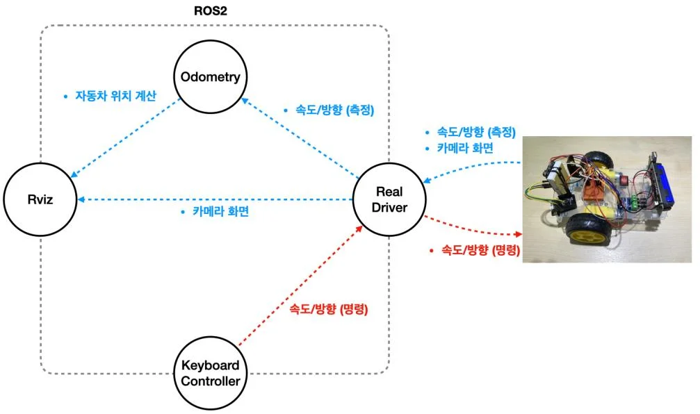
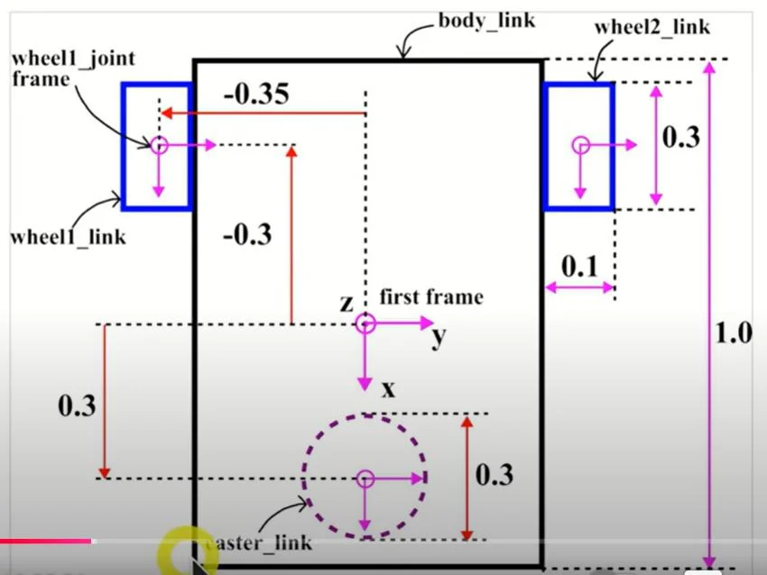
Odom Odom
- car_odom 코드 Driver에서 속도/방향에 대한 측정 값을 보내면 이 값을 기준으로 회전 변환 행렬을 이용해서 자동차의 실제 위치 계산
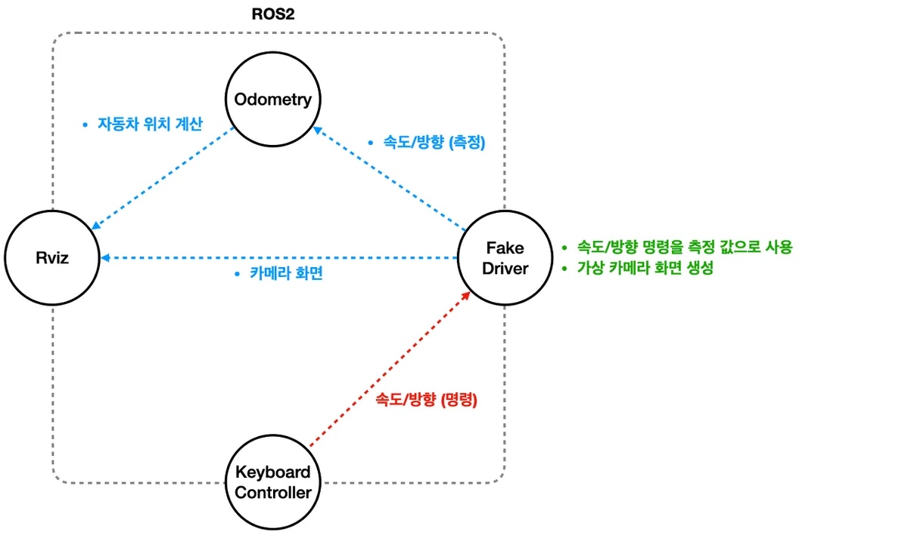
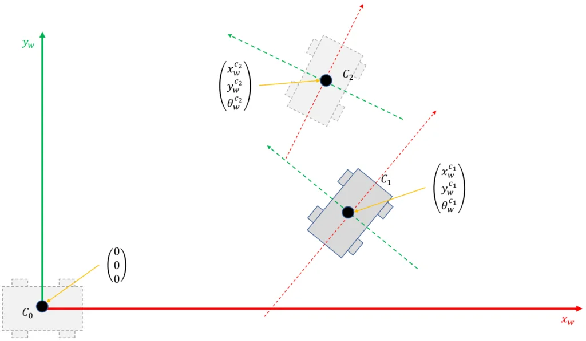
Odom odom 회전 변환 행렬
- Odometry 회전 행렬 변환 식 -3차원 공간에서 물체의 위치와 자세를 표현(x,y,z,θx,θy,θz)(x,y,z,θx,θy,θz) 6개의 값 ◦xx: x 축 방향으로 이동 거리입니다. ◦yy: y 축 방향으로 이동 거리입니다. ◦zz: z 축 방향으로 이동 거리입니다. ◦θxθx: x 축을 기준으로 반 시계 방향으로 회전한 각도 ◦θyθy: y 축을 기준으로 반 시계 방향으로 회전한 각도 ◦θzθz: z 축을 기준으로 반 시계 방향으로 회전한 각도 -2차원 공간에서(x,y,θ)(x,y,θ) 3개의 값으로 표현 ◦xx: x축 방향으로 이동 거리 ◦yy: y축 방향으로 이동 거리 ◦θθ: 반 시계 방향으로 회전한 각도
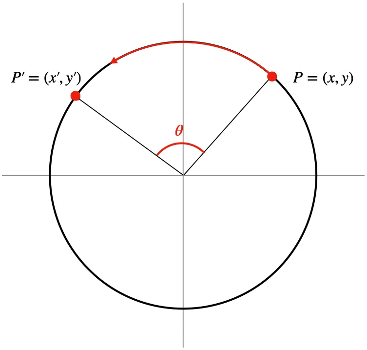
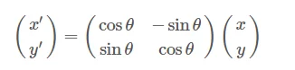
Odom odom
-
Odometry 자동차의 위치 변화 Odom odom
-
static_transform_publisher를 이용한 TF2 기능 $ ros2 run tf2_ros static_transform_publisher 2 1 0 0.785 0 0 world robot_1 ◦2 1 0: x, y, z 좌표로 x=2, y=1, z=0이라는 의미입니다. ◦0.785 0 0: 은 yaw, pitch, roll 값으로 반 시계 방향으로 45° π/4π/4 만큼 회전하라는 의미입니다.
Rokey 차 동 구동 로봇 패키지 참고 Controller Driver, Plugin
Rokey 차 동 구동 로봇 패키지 참고
-
odom 노드 작성 src/car_tutorial/car_tutorial/odom.py 패키지 생성 및 실행 import numpy as np import rclpy from rclpy.node import Node from tf2_ros import TransformBroadcaster from geometry_msgs.msg import Twist from geometry_msgs.msg import TransformStamped from nav_msgs.msg import Odometry from tf_transformations import quaternion_from_euler class Odom(Node): def init(self): super().init("odom")
# Parameters self.timer_frequently = 0.1 # init variable self.linear = 0.0 self.angular = 0.0 self.vel_x = 0.0 self.vel_y = 0.0 self.vel_z = 0.0 self.delta_x = 0.0 self.delta_y = 0.0 self.delta_z = 0.0 self.pos_x = 0.0 self.pos_y = 0.0 self.pos_z = 0.0 self.tf_broadcaster = TransformBroadcaster(self) # subscriber self.sub_cmd_vel = self.create_subscription(Twist, "raw_vel", self.raw_vel_callback, 10) # publisher self.pub_odometry = self.create_publisher(Odometry, "odom", 10) # timer self.timer = self.create_timer(self.timer_frequently, self.publish_odometry)def raw_vel_callback(self, msg): self.get_logger().info(f"recv cmd_vel message {msg}") self.linear = msg.linear.x self.angular = msg.angular.z
def publish_odometry(self): self.delta_x = self.linear * np.cos(self.pos_z) * self.timer_frequently self.delta_y = self.linear * np.sin(self.pos_z) * self.timer_frequently self.delta_z = self.angular * self.timer_frequently
self.pos_x += self.delta_x self.pos_y += self.delta_y self.pos_z += self.delta_z q = quaternion_from_euler(0.0, 0.0, self.pos_z) # Odometry odom = Odometry() odom.header.stamp = self.get_clock().now().to_msg() odom.header.frame_id = "odom" odom.child_frame_id = "base_link"
Rokey 차 동 구동 로봇 패키지 참고 패키지 생성 및 실행 odom.pose.pose.position.x = self.pos_x odom.pose.pose.position.y = self.pos_y odom.pose.pose.position.z = 0.0 odom.pose.pose.orientation.x = q[0] odom.pose.pose.orientation.y = q[1] odom.pose.pose.orientation.z = q[2] odom.pose.pose.orientation.w = q[3]
odom.twist.twist.linear.x = self.vel_x
odom.twist.twist.linear.y = 0.0
odom.twist.twist.linear.z = 0.0
odom.twist.twist.angular.x = 0.0
odom.twist.twist.angular.y = 0.0
odom.twist.twist.angular.z = self.vel_z
# TF
t = TransformStamped()
t.header.stamp = self.get_clock().now().to_msg()
t.header.frame_id = "odom"
t.child_frame_id = "base_link"
t.transform.translation.x = self.pos_x
t.transform.translation.y = self.pos_y
t.transform.translation.z = 0.0
t.transform.rotation.x = q[0]
t.transform.rotation.y = q[1]
t.transform.rotation.z = q[2]
t.transform.rotation.w = q[3]
self.tf_broadcaster.sendTransform(t)
self.pub_odometry.publish(odom)
def main(args=None): rclpy.init(args=args) odom = Odom() rclpy.spin(odom) odom.destroy_node() rclpy.shutdown()
if name == "main": main() import numpy as np import rclpy from rclpy.node import Node from tf2_ros import TransformBroadcaster from geometry_msgs.msg import Twist from geometry_msgs.msg import TransformStamped from nav_msgs.msg import Odometry from tf_transformations import quaternion_from_euler class Odom(Node): def init(self): super().init("odom")
# Parameters
self.timer_frequently = 0.1
# init variable
self.linear = 0.0
self.angular = 0.0
self.vel_x = 0.0
self.vel_y = 0.0
self.vel_z = 0.0
self.delta_x = 0.0
self.delta_y = 0.0
self.delta_z = 0.0
self.pos_x = 0.0
self.pos_y = 0.0
self.pos_z = 0.0
self.tf_broadcaster = TransformBroadcaster(self)
# subscriber
self.sub_cmd_vel = self.create_subscription(Twist, "raw_vel", self.raw_vel_callback, 10)
# publisher
self.pub_odometry = self.create_publisher(Odometry, "odom", 10)
# timer
self.timer = self.create_timer(self.timer_frequently, self.publish_odometry)
def raw_vel_callback(self, msg):
self.get_logger().info(f"recv cmd_vel message {msg}")
self.linear = msg.linear.x
self.angular = msg.angular.z
def publish_odometry(self):
self.delta_x = self.linear * np.cos(self.pos_z) * self.timer_frequently
self.delta_y = self.linear * np.sin(self.pos_z) * self.timer_frequently
self.delta_z = self.angular * self.timer_frequently
self.pos_x += self.delta_x
self.pos_y += self.delta_y
self.pos_z += self.delta_z
q = quaternion_from_euler(0.0, 0.0, self.pos_z)
# Odometry
odom = Odometry()
odom.header.stamp = self.get_clock().now().to_msg()
odom.header.frame_id = "odom"
odom.child_frame_id = "base_link"
odom.pose.pose.position.x = self.pos_x
odom.pose.pose.position.y = self.pos_y
odom.pose.pose.position.z = 0.0
odom.pose.pose.orientation.x = q[0]
odom.pose.pose.orientation.y = q[1]
odom.pose.pose.orientation.z = q[2]
odom.pose.pose.orientation.w = q[3]
odom.twist.twist.linear.x = self.vel_x
odom.twist.twist.linear.y = 0.0
odom.twist.twist.linear.z = 0.0
odom.twist.twist.angular.x = 0.0
odom.twist.twist.angular.y = 0.0
odom.twist.twist.angular.z = self.vel_z
# TF
t = TransformStamped()
t.header.stamp = self.get_clock().now().to_msg()
t.header.frame_id = "odom"
t.child_frame_id = "base_link"
t.transform.translation.x = self.pos_x
t.transform.translation.y = self.pos_y
t.transform.translation.z = 0.0
t.transform.rotation.x = q[0]
t.transform.rotation.y = q[1]
t.transform.rotation.z = q[2]
t.transform.rotation.w = q[3]
self.tf_broadcaster.sendTransform(t)
self.pub_odometry.publish(odom)
def main(args=None): rclpy.init(args=args) odom = Odom() rclpy.spin(odom) odom.destroy_node() rclpy.shutdown()
if name == "main": main()
Rokey 차 동 구동 로봇 패키지 참고
-
launch 수정 src/car_tutorial/launch/car_tutorial.launch.py 패키지 생성 및 실행 Rokey 차 동 구동 로봇 패키지 참고
-
setup.py 수정 src/car_tutorial/setup.py 패키지 생성 및 실행 Rokey 차 동 구동 로봇 패키지 참고 $ cd ~/car_ws $ colcon build –symlink-install $ source install/setup.bash $ ros2 launch car_tutorial car_tutorial.launch
-
빌드 및 실행
- rviz 설정 Add -> TF Add -> RobotModel Add -> Image Global Options > Fixed Frame : base_link RobotModel > Description Topic : /robot_description Image > Topic : /image File -> Save Config 패키지 생성 및 실행
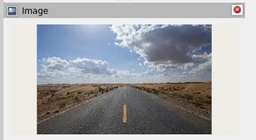
Rokey 차 동 구동 로봇 패키지 참고 $ ros2 run teleop_twist_keyboard teleop_twist_keyboard
-
두 번째 터미널에서 실행 u, I, o, j, k, l, m, ,, . 키로 조작 패키지 생성 및 실행 Rokey 차 동 구동 로봇 패키지 참고
-
rqt_graph 실행 $ rqt_graph 패키지 생성 및 실행
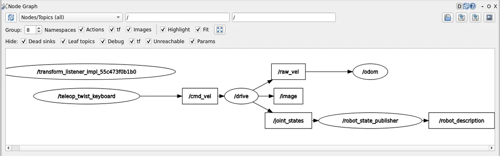
Rokey 차 동 구동 로봇 패키지 참고 가제 보 시뮬레이션
시뮬레이션 gazebo
-
car_tutorial package 생성 및 설정 $ cd ~/sim_ws $ ros2 pkg create --build-type ament_python car_simulation $ cd car_tutorial $ mkdir urdf launch $ cp ~/car_sw/src/car_tutorial/urdf/car.xacro ~/sim_sw/src/car_simulation/urdf/car.xacro
-
xacro 파일 복사
시뮬레이션 gazebo
- macros 파일 작성 src/sim_tutorial/urdf/macros.xacro
시뮬레이션 gazebo
- xacro 파일 수정 src/sim_tutorial/urdf/car.xacro macros 부분 추가
Rokey 참고
- setup.py 작성 src/sim_tutorial/setup.py 패키지 생성 및 실행 시뮬레이션
시뮬레이션 패키지 생성 및 실행
- launch 파일 작성 import os from ament_index_python.packages import get_package_share_directory from launch import LaunchDescription from launch.substitutions import LaunchConfiguration from launch.actions import DeclareLaunchArgument from launch_ros.actions import Node import xacro def generate_launch_description(): use_sim_time = LaunchConfiguration("use_sim_time") pkg_path = os.path.join(get_package_share_directory("car_simulation")) xacro_file = os.path.join(pkg_path, "urdf", "car.xacro") robot_description = xacro.process_file(xacro_file) params = {"robot_description": robot_description.toxml(), "use_sim_time": use_sim_time} return LaunchDescription( [ DeclareLaunchArgument( "use_sim_time", default_value="true", description="use sim time" ), Node( package="robot_state_publisher", executable="robot_state_publisher", output="screen", parameters=[params], ), ] ) src/sim_tutorial/launch/car_simulation.launch.py
시뮬레이션 $ cd ~/sim_ws $ colcon build –symlink-install $ source install/setup.bash $ ros2 launch sim_tutorial car_simulation.launch
- 빌드 및 실행 $ ros2 launch gazebo_ros gazebo.launch.py $ ros2 run gazebo_ros spawn_entity.py -topic robot_description -entity with_robot 패키지 생성 및 실행
시뮬레이션 가제보(gazebo) Gazebo는 로봇을 3D 환경에서 시뮬레이션할 수 있는 강력한 물리 엔진 기반 시뮬레이터. -로봇 시뮬레이션 -URDF 또는 SDF 형식의 로봇 모델을 불러와서 3D 환경에서 테스트 가능. -예: TurtleBot3를 Gazebo에서 로딩하여 이동, 탐색 등을 실험 가능. -물리 엔진 제공 -ODE, Bullet, DART, Simbody 등의 물리 엔진을 사용하여 실제 물리와 유사한 환경을 구현. -중력, 충돌, 마찰, 센서 노이즈 등을 포함한 시뮬레이션 가능. -센서 시뮬레이션 -LiDAR, 카메라, IMU, GPS, Force-Torque 센서 등을 가상 환경에서 사용할 수 있음. -예: /scan 토픽을 이용해 가상 LiDAR 데이터를 ROS 2에서 받아 올 수 있음.
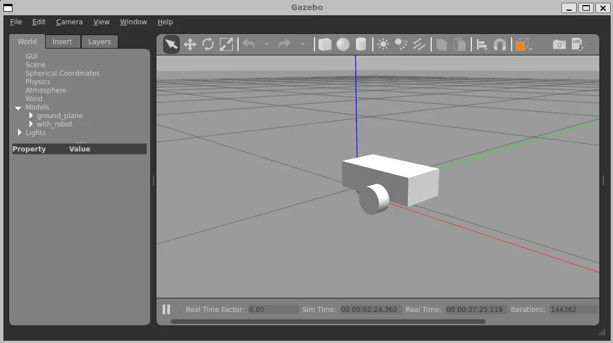
시뮬레이션 gazebo Launch 파일로 한 번에 실행 import os import xacro from ament_index_python.packages import get_package_share_directory from launch import LaunchDescription from launch.actions import IncludeLaunchDescription, ExecuteProcess, TimerAction from launch.launch_description_sources import PythonLaunchDescriptionSource from launch_ros.actions import Node from launch.substitutions import LaunchConfiguration from launch.actions import RegisterEventHandler, EmitEvent from launch.event_handlers import OnProcessExit from launch.events import Shutdown def generate_launch_description(): pkg_share = get_package_share_directory('car_simulation')
xacro_file = os.path.join(pkg_share, 'urdf', 'car.xacro')
robot_description_config = xacro.process_file(xacro_file)
robot_desc = robot_description_config.toxml()
gazebo = IncludeLaunchDescription(
PythonLaunchDescriptionSource(
os.path.join(get_package_share_directory('gazebo_ros'), 'launch', 'gazebo.launch.py'),
),
)
robot_state_publisher = Node(
package='robot_state_publisher',
executable='robot_state_publisher',
name='robot_state_publisher',
output='screen',
parameters=[{'use_sim_time': True,
'robot_description': robot_desc}]
)
spawn_entity = Node(
package='gazebo_ros',
executable='spawn_entity.py',
arguments=['-topic', 'robot_description',
'-entity', 'with_robot'],
output='screen'
)
delayed_spawn = TimerAction(
period=5.0,
actions=[spawn_entity]
)
return LaunchDescription([
gazebo,
robot_state_publisher,
delayed_spawn
])
src/sim_tutorial/launch/car_simulation_once.launch.py
Rokey 차 동 구동 로봇 패키지 참고 차 동 로봇 시뮬레이션
운전하기 가제 보 시뮬레이션
운전하기 가제 보 시뮬레이션 xacro 파일 수정 src/sim_turoail/urdf/car.xacro macros 부분 추가
운전하기 $ cd ~/car_ws $ colcon build –symlink-install $ source install/setup.bash $ ros2 launch sim_tutorial car_simulation_once.launch
- 빌드 및 실행 $ ros2 run teleop_twist_keyboard teleop_twist_keyboard $ rviz2 가제 보 시뮬레이션
운전하기 Add -> TF Add -> RobotModel Description Topic: /robot_description Global Options > Fixed Frame : odom Rviz2 Odom 설정 ODOM 프레임(Odometry Frame)은 로봇의 이동 경로를 추적하는 데 사용되는 중요한 좌표계 1.기본 특징: -로봇이 시작한 위치를 기준으로 하는 좌표계 -로봇의 상대적인 움직임을 표현 -시간이 지나도 원점이 변하지 않음 -일반적으로 "odom" 이라는 이름의 프레임으로 표현 2.주요 역할: -로봇의 현재 위치와 방향을 시작점 대비 상대적으로 추적 -단기적인 로봇의 움직임을 정확하게 표현 -지역적 네비게이션에 사용 -센서 퓨전의 기준 프레임으로 활용
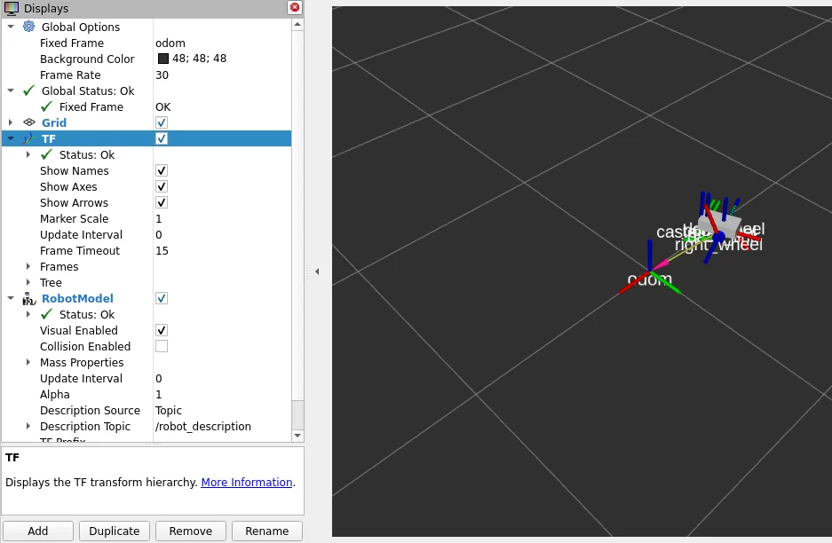
운전하기 추측 항법(推測航法, dead reckoning, dead reckoning navigation) Rviz2 Odom 설정 TF 트리에서의 위치 world/map -> odom -> base_link -> 기타 센서 프레임 4.다른 프레임과의 관계: -map 프레임: 전역 좌표계, 절대 위치 표현 -base_link: 로봇 본체의 좌표계 -odom은 이 둘 사이의 중간 역할을 수행 5.사용 예시: -로봇의 dead reckoning 구현 -로컬 장애물 회피 -단거리 자율 주행 -센서 데이터 통합 주의할 점: -시간이 지날수록 오차가 누적될 수 있음 -전역 위치 보정이 필요할 수 있음 -map 프레임과의 관계를 주기적으로 업데이트해야함
운전하기 teleop 을 이용한 조작 가제 보 시뮬레이션 ros2 run teleop_twist_keyboard teleop_twist_keyboard
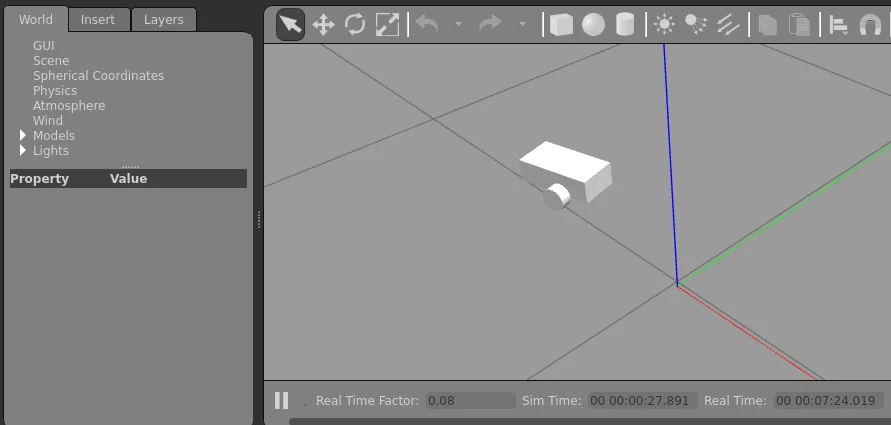
운전하기 rqt_graph 실행 $ rqt_graph 가제 보 시뮬레이션
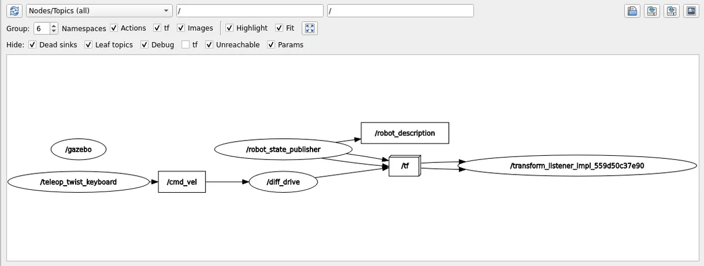
Rokey 차 동 구동 로봇 패키지 참고 라이다 시뮬레이션
라이다 라이다 시뮬레이션 lidar.xacro 파일 작성 src/sim_tutorial/urdf/lidar.xacro 라이더 기능 추가
라이다 라이다 시뮬레이션
- xacro 파일 수정 src/sim_tutorial/urdf/car.xacro 라이더 링크 및 기능 파일 추가
라이다 $ cd ~/car_ws $ colcon build –symlink-install $ source install/setup.bash $ ros2 launch sim_tutorial lidar.launch.py 빌드 및 실행 라이다 시뮬레이션 $ ros2 run teleop_twist_keyboard teleop_twist_keyboard 동작 시키기
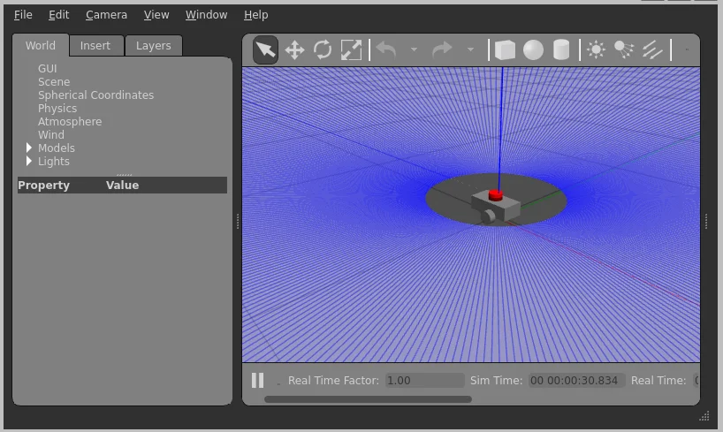
라이다 모델 추가 라이다 시뮬레이션 insert http://model ~~ 모델 추가
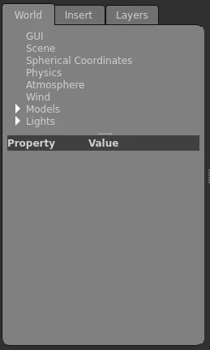
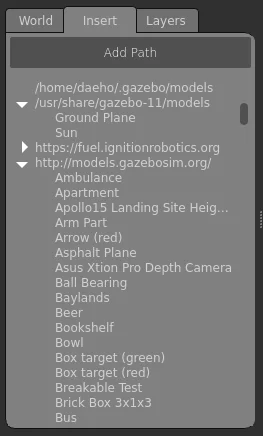
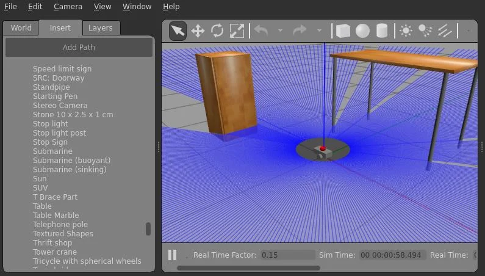
라이다 world 저장 라이다 시뮬레이션 File > Save World As ~/car_ws/src/car_simulation/my_world.world
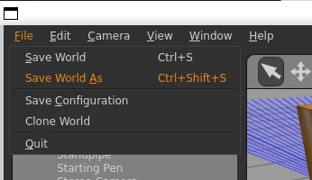
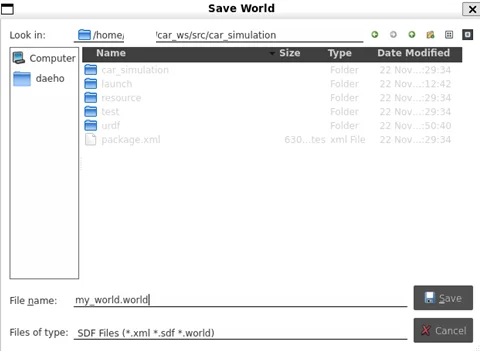
라이다 Rviz 실행 및 설정 라이다 시뮬레이션 $ rviz2 Add -> TF Add -> RobotModel Add -> LaserScan Global Options > Fixed Frame : odom RobotModel > Description Topic : /robot_description LaserScan > Topic : /scan
style : Points
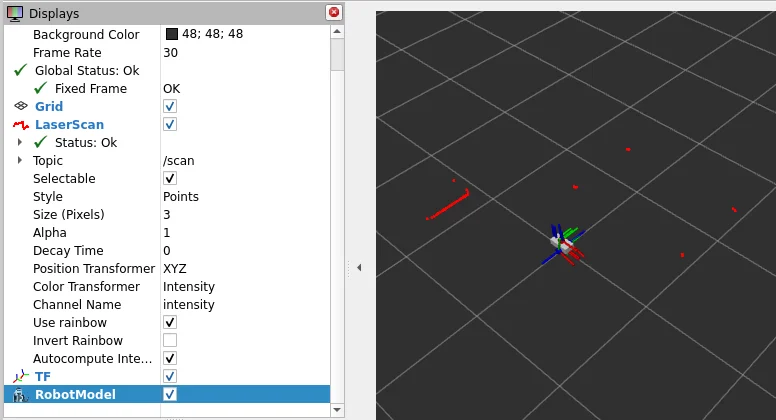
Rokey 차 동 구동 로봇 패키지 참고 카메라 시뮬레이션
카메라 카메라 시뮬레이션 camera.xacro 파일 작성 src/sim_tutorial/urdf/camera.xacro 카메라 기능 추가 ◦update_rate: 초당 10회 정보를 제공합니다. ◦horizontal_fov: 가로 방향의 FOV (Field of View)는 1.089로 설정했 습 니 다. Gazebo에서는 세로 방향의 FOV는 이미지 사이즈에 따라서 자동으로 계산되는 것으로 보입니다. ◦image format: R8G 8B8로 빨강, 초록, 파랑 모두 8비트로 인코딩 됩니다. ◦image widht/height: 이미지의 크기는 가로 640 픽셀, 세로 480 픽셀로 지정했습니다. ◦frame_name: Camera가 부착된 센서 이름입니다.
카메라 카메라 시뮬레이션
- xacro 파일 수정 src/sim_tutorial/urdf/car.xacro 카메라 링크 및 기능 파일 추가
카메라 $ cd ~/car_ws $ colcon build –symlink-install $ source install/setup.bash $ ros2 launch sim_tutorial camera.launch.py 빌드 및 실행 카메라 시뮬레이션 $ ros2 run teleop_twist_keyboard teleop_twist_keyboard 동작 시키기
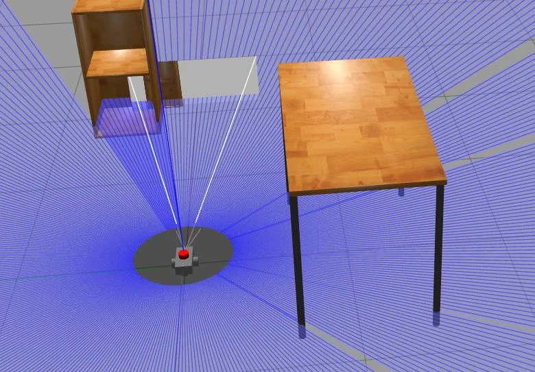
카메라 Add -> TF Add -> RobotModel Add -> LaserScan Add -> Image Global Options > Fixed Frame : odom RobotModel > Description Topic : /robot_description LaserScan > Topic : /scan
style : Points Image > Topic : /camera/image_raw Rviz 실행 및 설정 $ rviz2 카메라 시뮬레이션
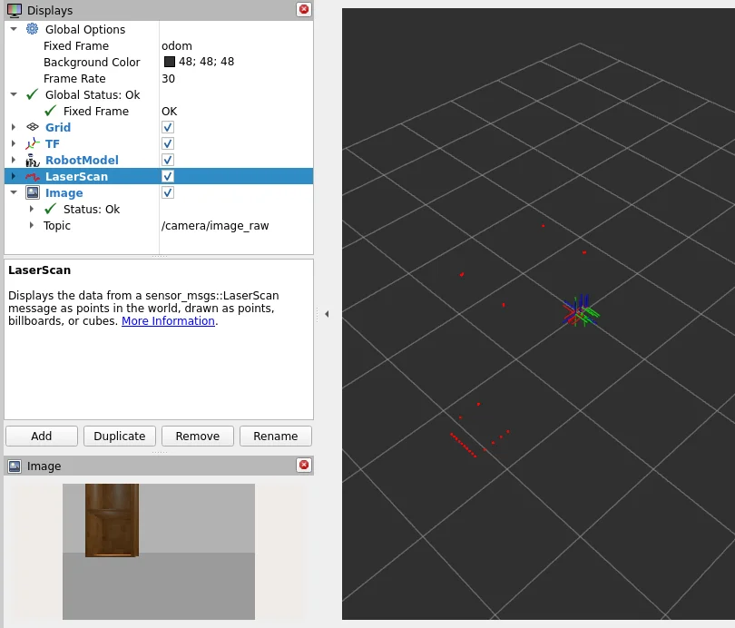
Rokey 참고 openManipulatorX , moveit2
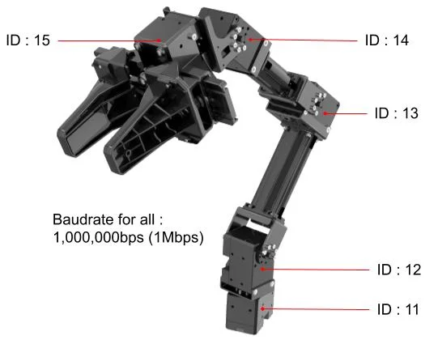
OpenManipulatorX 가제보에서 물체를 붙여서 메니퓨 레이 터 이동시키기 메니퓰레이터 https://emanual.robotis.com/docs/en/platform/openmanipulator_x/quick_start_guide_basic_operation/ OpenManipulatorX 특징: 1.구조
- 5개의 다이나믹 셀 서 보 모터 사용 (XM430-W350-T)
- 4 자유도 매니퓰레이터 + 그리퍼
- 최대가 반 하중: 0.5kg
-
작업 반경: 약 380mm 1.하드웨어 구성
-
다이나믹 셀 모터: 관절 제어
- U2D2: 다이나믹 셀 통신용 컨버터
- 프레임: 3D 프린팅 가능한 부품들
객체(object)와 함께 로봇 팔 다루기 설치 과정 메니퓰레이터 sudo apt-get install ros-\({ROS_DISTRO}-dynamixel-sdk sudo apt-get install ros-\)-dynamixel-workbench sudo apt-get install ros-${ROS_DISTRO}-robotis-manipulator
작업 공간 생성¶
mkdir -p ~/robotis_ws/src cd ~/robotis_ws/src
소스 코드 다운로드¶
git clone https://github.com/ROBOTIS-GIT/open_manipulator.git git clone https://github.com/ROBOTIS-GIT/open_manipulator_msgs.git git clone https://github.com/ROBOTIS-GIT/open_manipulator_dependencies.git
빌드¶
cd ~/robotis_ws catkin_make
객체(object)와 함께 로봇 팔 다루기
~/.bashrc에 추가¶
echo 'source ~/robotis_ws/devel/setup.bash' >> ~/.bashrc source ~/.bashrc 메니퓰레이터
Gazebo 시뮬레이션¶
roslaunch open_manipulator_gazebo open_manipulator_gazebo.launch
RViz 시각화¶
roslaunch open_manipulator_description open_manipulator_rviz.launch
컨트롤러¶
ros2 launch open_manipulator_x_moveit_config moveit_core.launch.py
GUI 컨트롤¶
ros2 launch open_manipulator_x_gui open_manipulator_x_gui.launch.py
Open manipulatorX class ManipulatorXMoveIt(Node): def init(self): super().init('manipulatorx_moveit2') # Initialize MoveIt2 MoveGroupCommander self.group_name = "manipulator" # Replace with the correct group name from your MoveIt2 configuration self.move_group = MoveGroupCommander(self.group_name) # Set up logger self.get_logger().info("Manipulator-X MoveIt2 Node Initialized") def move_to_xyz(self, x, y, z): # Create a Pose object for the target position target_pose = Pose() target_pose.position.x = x target_pose.position.y = y target_pose.position.z = z
# Orientation (w=1 indicates no rotation, adjust if needed)
target_pose.orientation.x = 0.0
target_pose.orientation.y = 0.0
target_pose.orientation.z = 0.0
target_pose.orientation.w = 1.0
# Set the target pose for the move group
self.move_group.set_pose_target(target_pose)
# Plan and execute the motion
success = self.move_group.go(wait=True)
self.move_group.stop() # Ensure no residual movement
self.move_group.clear_pose_targets()
if success:
self.get_logger().info(f"Successfully moved to position: x={x}, y={y}, z={z}")
else:
self.get_logger().error("Failed to move to the target position")
def main(): rclpy.init()
node = ManipulatorXMoveIt()
# Example target position (replace with your desired
coordinates) target_x = 0.2 target_y = 0.0 target_z = 0.2 # Move to the target position node.move_to_xyz(target_x, target_y, target_z) rclpy.shutdown() if name == "main": main() import rclpy from rclpy.node import Node from moveit_commander import MoveGroupCommander from geometry_msgs.msg import Pose 메니퓰레이터
Open manipulatorX import os from ament_index_python.packages import get_package_share_directory from launch import LaunchDescription from launch.actions import IncludeLaunchDescription from launch.launch_description_sources import PythonLaunchDescriptionSource from launch_ros.actions import Node def generate_launch_description(): # Define package paths moveit_config_path = get_package_share_directory('turtlebot3_manipulation_moveit_config') bringup_path = get_package_share_directory('turtlebot3_manipulation_bringup') # Include MoveIt2 move_group.launch.py move_group_launch = IncludeLaunchDescription( PythonLaunchDescriptionSource( os.path.join(moveit_config_path, 'launch', 'move_group.launch.py') ) ) # Include robot hardware launch file hardware_launch = IncludeLaunchDescription( PythonLaunchDescriptionSource( os.path.join(bringup_path, 'launch', 'hardware.launch.py') ) ) 메니퓰레이터 # RViz node to visualize planning rviz_config_file = os.path.join(moveit_config_path, 'launch', 'moveit.rviz') rviz_node = Node( package='rviz2', executable='rviz2', arguments=['-d', rviz_config_file], name='rviz2', output='screen' ) return LaunchDescription([ hardware_launch, move_group_launch, rviz_node ])
Open manipulatorX import rclpy from rclpy.node import Node from moveit_commander import MoveGroupCommander class GripperControl(Node): def init(self): super().init('gripper_control') self.gripper_group_name = "gripper" # Replace with the correct group name for the gripper self.gripper_group = MoveGroupCommander(self.gripper_group_name) self.get_logger().info("Gripper Control Node Initialized") def open_gripper(self): joint_goal = [0.02] # Adjust value as per the gripper's joint limits (fully open) self.gripper_group.go(joint_goal, wait=True) self.gripper_group.stop() self.get_logger().info("Gripper opened.") def close_gripper(self): joint_goal = [0.0] # Adjust value as per the gripper's joint limits (fully closed) self.gripper_group.go(joint_goal, wait=True) self.gripper_group.stop() self.get_logger().info("Gripper closed.") def main(): rclpy.init() node = GripperControl() # Example: Open and then close the gripper node.open_gripper() rclpy.sleep(2) # Wait for a while node.close_gripper() rclpy.shutdown() if name == 'main': main() 메니퓰레이터
Open manipulatorX , moveit2를 이용 타겟으로 이동시키기
!/usr/bin/env python3¶
import rclpy from rclpy.node import Node from moveit2 import ( MoveGroupInterface, PlanningSceneInterface, RobotState ) from geometry_msgs.msg import Pose, Point, Quaternion from tf2_ros import TransformException from tf2_ros.buffer import Buffer from tf2_ros.transform_listener import TransformListener class ArmTrajectoryPlanner(Node): def init(self): super().init('arm_trajectory_planner')
# Initialize MoveIt2 interfaces
self.move_group = MoveGroupInterface(
node=self,
name="arm", # Your planning group name
robot_description="robot_description",
robot_description_semantic="robot_description_semantic"
)
self.planning_scene = PlanningSceneInterface(
node=self
)
Set planning parameters¶
self.move_group.set_planning_time(5.0)
self.move_group.set_num_planning_attempts(10)
self.move_group.set_max_velocity_scaling_factor(0.1)
self.move_group.set_max_acceleration_scaling_factor(0.1)
def plan_cartesian_path(self, waypoints):
"""Plan a Cartesian path through given waypoints."""
(plan, fraction) = self.move_group.compute_cartesian_path(
waypoints, # waypoints to follow
0.01, # eef_step
0.0, # jump_threshold
True # avoid_collisions
)
return plan, fraction
def execute_trajectory(self, plan):
"""Execute a planned trajectory."""
success = self.move_group.execute(plan, wait=True)
return success
def move_to_pose(self, target_pose):
"""Plan and execute movement to a target pose."""
self.move_group.set_pose_target(target_pose)
success = self.move_group.go(wait=True)
self.move_group.clear_pose_targets()
return success
메니퓰레이터
Open manipulatorX def main(): rclpy.init()
planner = ArmTrajectoryPlanner()
# Example target pose
target_pose = Pose()
target_pose.position = Point(x=0.4, y=0.0, z=0.4)
target_pose.orientation = Quaternion(x=0.0, y=0.0, z=0.0, w=1.0)
# Move to single target pose
success = planner.move_to_pose(target_pose)
planner.get_logger().info(f"Move to pose success: {success}")
# Example Cartesian path
waypoints = []
# Start with current pose
start_pose = planner.move_group.get_current_pose().pose
waypoints.append(start_pose)
# Add waypoints relative to current pose
wpose = Pose()
wpose.position = Point(x=start_pose.position.x + 0.1,
y=start_pose.position.y,
z=start_pose.position.z)
wpose.orientation = start_pose.orientation
waypoints.append(wpose)
wpose = Pose() wpose.position = Point(x=start_pose.position.x + 0.1, y=start_pose.position.y + 0.1, z=start_pose.position.z) wpose.orientation = start_pose.orientation waypoints.append(wpose)
# Plan and execute Cartesian path
plan, fraction = planner.plan_cartesian_path(waypoints)
planner.get_logger().info(f"Planned {fraction * 100}% of Cartesian path")
if fraction > 0.9: # Execute only if we can achieve at least 90% of the path
success = planner.execute_trajectory(plan)
planner.get_logger().info(f"Cartesian path execution success: {success}")
rclpy.shutdown()
if name == 'main': main() 메니퓰레이터
객체(object)와 함께 로봇 팔 다루기 https://github.com/minwoominwoominwoo7/op_moveit_client 가제보에서 물체를 붙여서 메니퓨 레이 터 이동시키기 메니퓰레이터
static_transform_publisher launch 파일 안에 추가 $ ros2 run tf2_ros static_transform_publisher 1 -1 0 0 0 0.707 base_link arm_base_link static_transform_publisher x y z yaw pitch roll frame_id child_frame_id period_in_ms -로봇의 센서 위치 정의 -고정된 좌표계 관계 설정 -로봇 모델의 기본 구조 정의 -시뮬레이션 환경 설정 메니퓰레이터
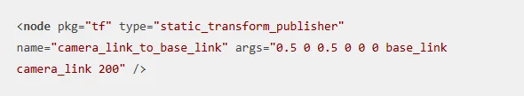
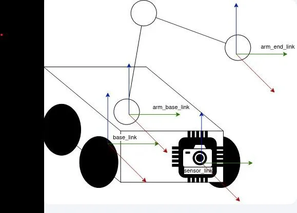
Rokey 참고 Make a world
시뮬레이션 월드 만들기 Edit 메뉴에서 building editor 를 클릭한다. 그러면 다음과 같은 building editor화면이 나타난다. Make a world
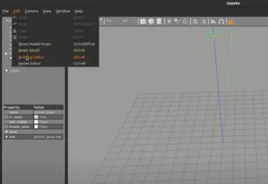
시뮬레이션 월드 만들기 화면에서 왼쪽에는 벽, 문, 계단 등을 만들 수 있는 항목들이 있고, 모눈종이처럼 생긴 구역에서 위에서 내려다보는 평면도 관점의 맵을 볼 수 있다. 이 모눈종이 구역에서 벽, 계단 등을 생성, 배치할 수 있다 아래 쪽 구역은 실제 gazebo 공간상에 생성된 3차원 맵을 보여 준다. Make a world Model 이름으로 저장한다.
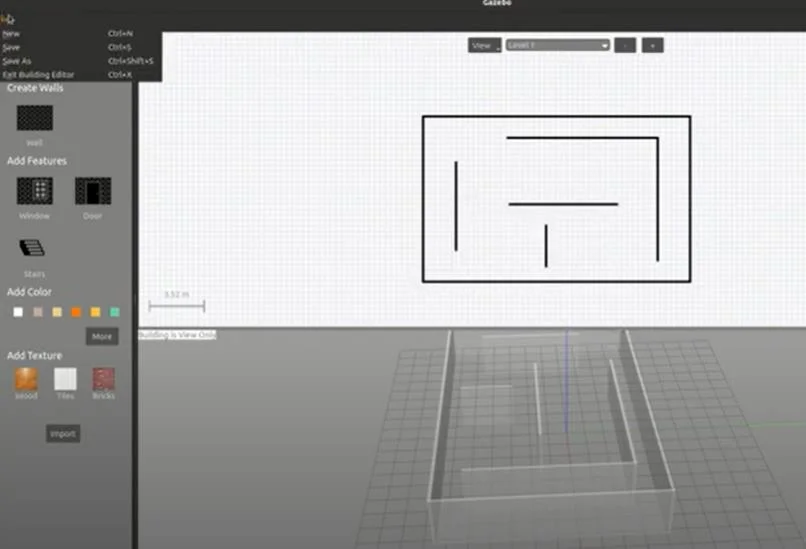
시뮬레이션 월드 만들기 계단 만들기 Make a world
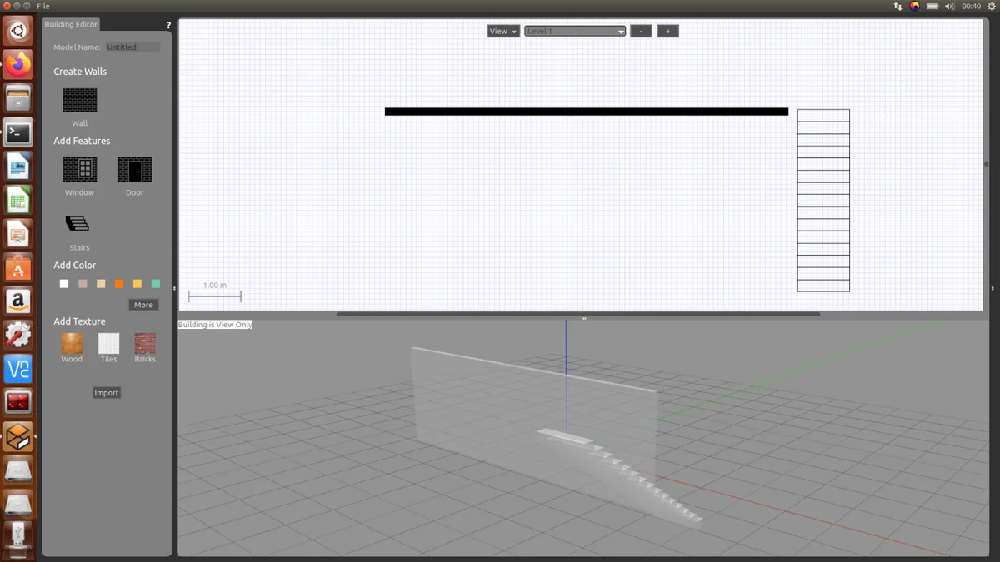
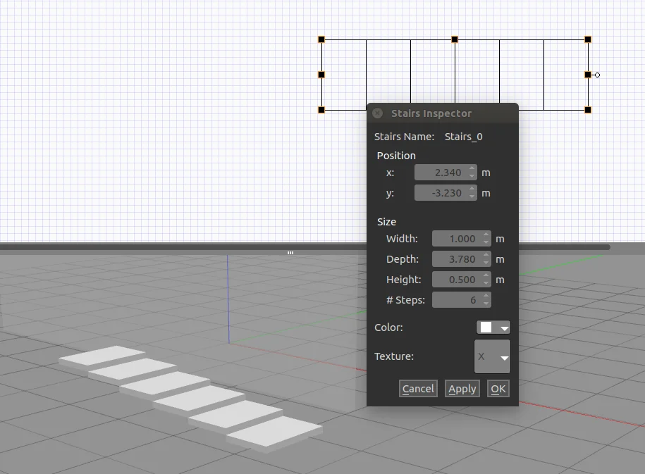
시뮬레이션 월드 만들기 표면 이미지 추가 및 World 저장하기 Make a world Add Texture Save as xxx.world https://www.youtube.com/watch?v=7McYSJFAqlU
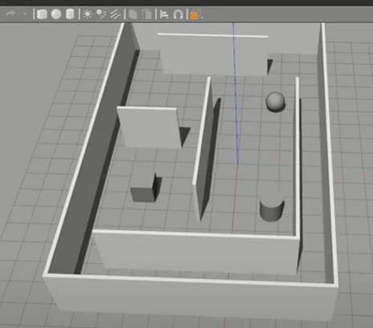
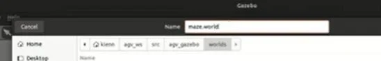
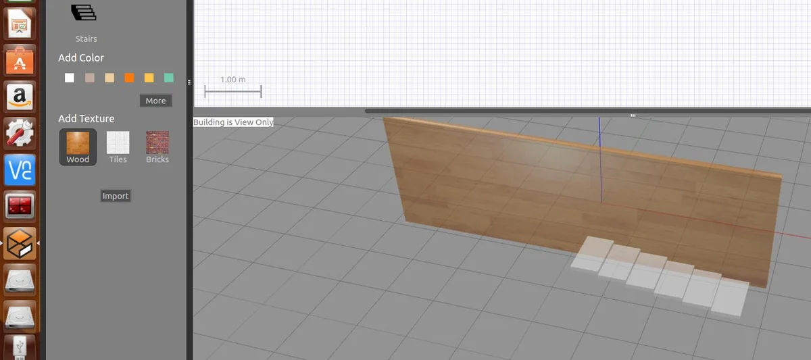
Rokey 차 동 구동 로봇 패키지 참고 예시 프로젝트
Turtlebot3 Manipulation https://emanual.robotis.com/docs/en/platform/turtlebot3/manipulation/
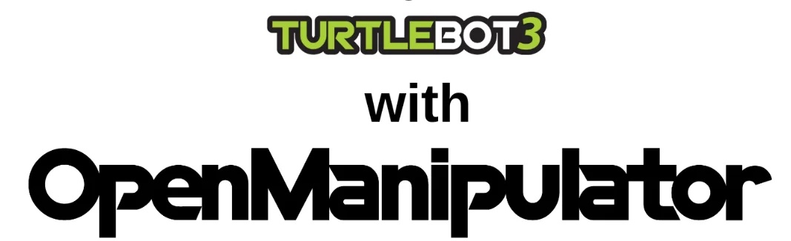
Turtlebot3 Manipulation TurtleBot3 SBC $ export OPENCR_PORT=/dev/ttyACM0 $ export OPENCR_MODEL=turtlebot3_manipulation $ rm -rf ./opencr_update.tar.bz2 $ wget https://github.com/ROBOTIS-GIT/OpenCR-Binaries/raw/master/turtlebot3/ROS2/latest/opencr_update.tar.bz2 $ tar -xvf opencr_update.tar.bz2 $ cd ./opencr_update $ ./update.sh $OPENCR_PORT $OPENCR_MODEL.opencr Simulation ros2 launch turtlebot3_manipulation_bringup gazebo.launch.py ros2 launch turtlebot3_manipulation_bringup gazebo.launch.py start_rviz:=true 또는 가상 환경
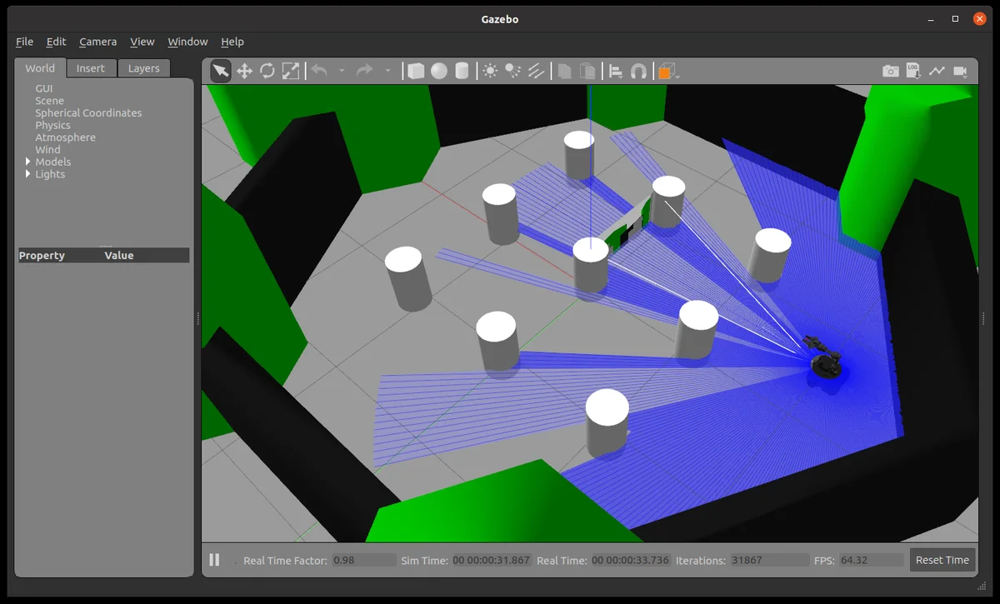
Turtlebot3 Manipulation ros2 launch turtlebot3_manipulation_moveit_config moveit_gazebo.launch.py ros2 launch turtlebot3_manipulation_bringup gazebo.launch.py ros2 run nav2_map_server map_saver_cli -f ~/map ros2 launch turtlebot3_manipulation_cartographer cartographer.launch.py 가상 환경
Turtlebot3 Manipulation 가상 환경
gazebo에서 3D맵 만들기 가상 환경 Edit 메뉴에서 building editor 를 클릭한다. 화면에서 왼쪽에는 벽, 문, 계단 등을 만들 수 있는 항목들이 있고, 모눈종이처럼 생긴 구역에서 위에서 내려다보 는 평면도 관점의 맵을 볼 수 있다. 이 모눈종이 구역에서 벽, 계단 등을 생성, 배치할 수 있다 아래 쪽 구역은 실제 gazebo 공간상에 생성된 3차원 맵을 보여 준다.
gazebo에서 3D맵 만들기 가상 환경 Add texture 기능으로 물체의 표면 질감?을 바꿔 줄 수 있다. building editor 에서 맵을 다 만들었다면 왼쪽 상단의 File 탭에서 Save as..를 클릭하고 이름을 바꿔 준 뒤, 저장한다. 저장한 뒤 File -> exit building editor 를 눌러 buildig editor 화면에서 나간다.
gazebo에서 3D맵 만들기
가상 환경
Gazebo에서 생성한 world를 SDF 파일로부터 불러와 실행하는 방법을 설명해 드리겠습니다.
1.터미널에서 직접 실행하는 방법:
gazebo
- launch 파일을 통해 실행하는 방법:
복수의 정찰 로봇 관제 시스템 가상 환경
로봇 암을 이용한 자동 주차 시스템 최대 높이 : 125m 6-DoF로 설계 MoveIT2 구동 가상 환경
드론 모델을 적용한 정찰 Drone
- sjtu_drone 모델을 가져와서 사용
- 자세 제어가 들어가 있는 점이 장점 https://github.com/NovoG93/sjtu_drone 가상 환경
Rokey 참고